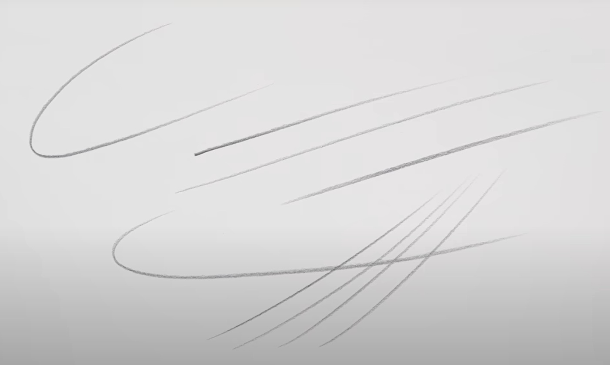

PAGINA EN CONSTRUCCIÓN
Aprende dibujo paso a paso
Fundamentos, perspectiva y figura humana.
| Tutoriales | Fundamentos | Perspectiva | Figura | Recursos | Sobre mí | Contacto |
Últimos tutoriales

6 habitos para mejorar la calidad de tus lineas
Nivel: Inicial • 10 min

Dibujo simplificado: Perspectiva de dos puntos
Nivel: Básico • 14 min

Dibuja cabezas rápidamente con el método de Loomis - Parte 1
Nivel: Intermedio • 24 min